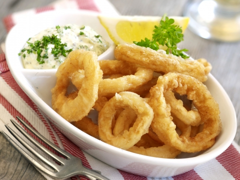

Calamares
Dit is een goedvoorgerecht omdat het niet heel erg vult, maar is ook een makkelijk gerecht voor een buffet.
Ingrediënten
500 g inktvis
75 g bloem
½ theelepel bakpoeder
zout
1 dl water
frituurvet
Bereidingswijze
- Snij ca.500 g inktvis in ringen, ook de tentakels.
- Maak een deegje van 75 g bloem, ½ theelepel bakpoeder, iets zout en ca.1 dl water.
- Haal de ringen erdoor en bak in frituurvet van 175 graden.
- Laat uitlekken op keukenpapier. Serveer het daarna op een schotel met een dipsaus.

Tip: Calamares is lekker met een dipsaus zoals aioli.